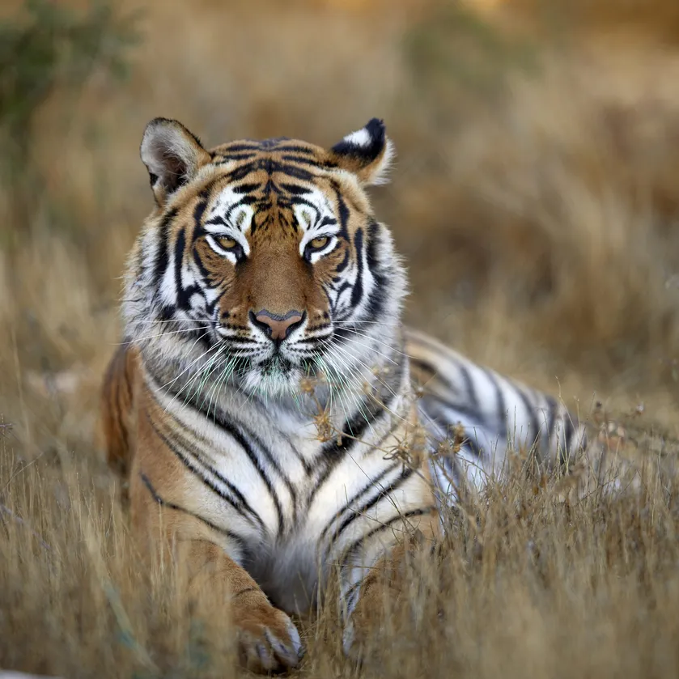
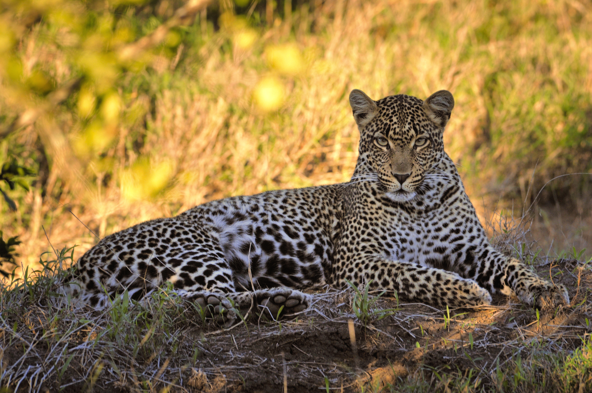
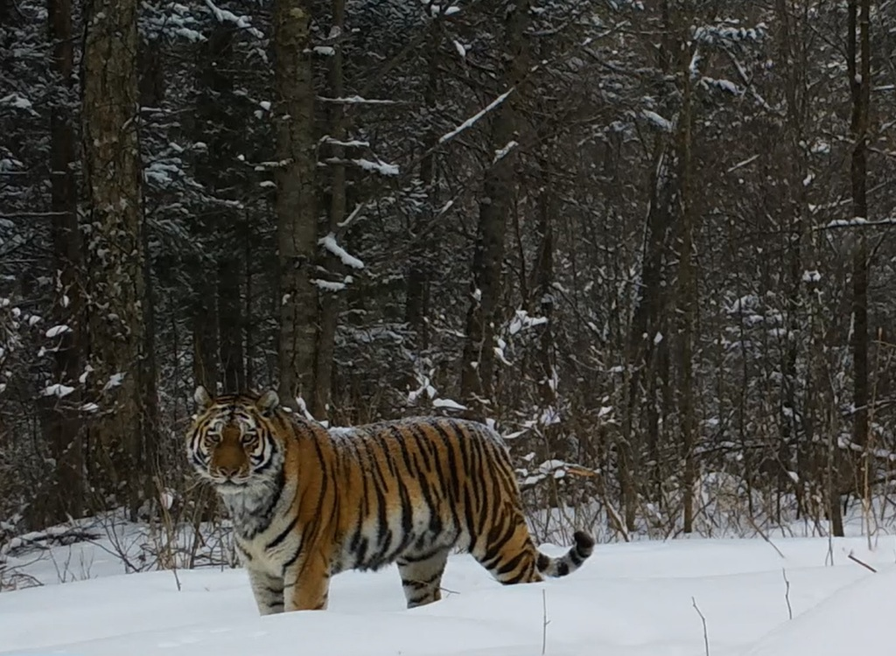
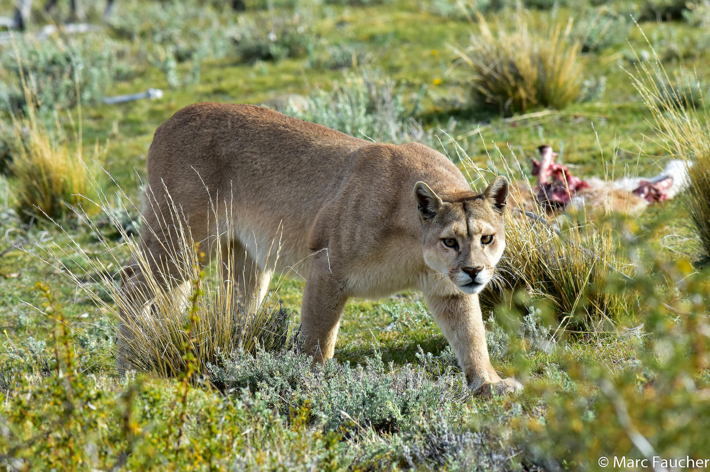
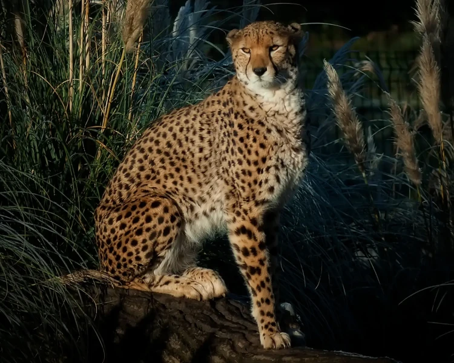
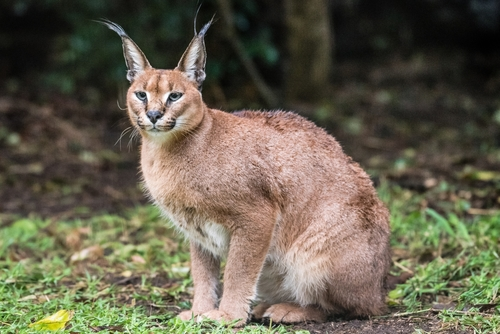
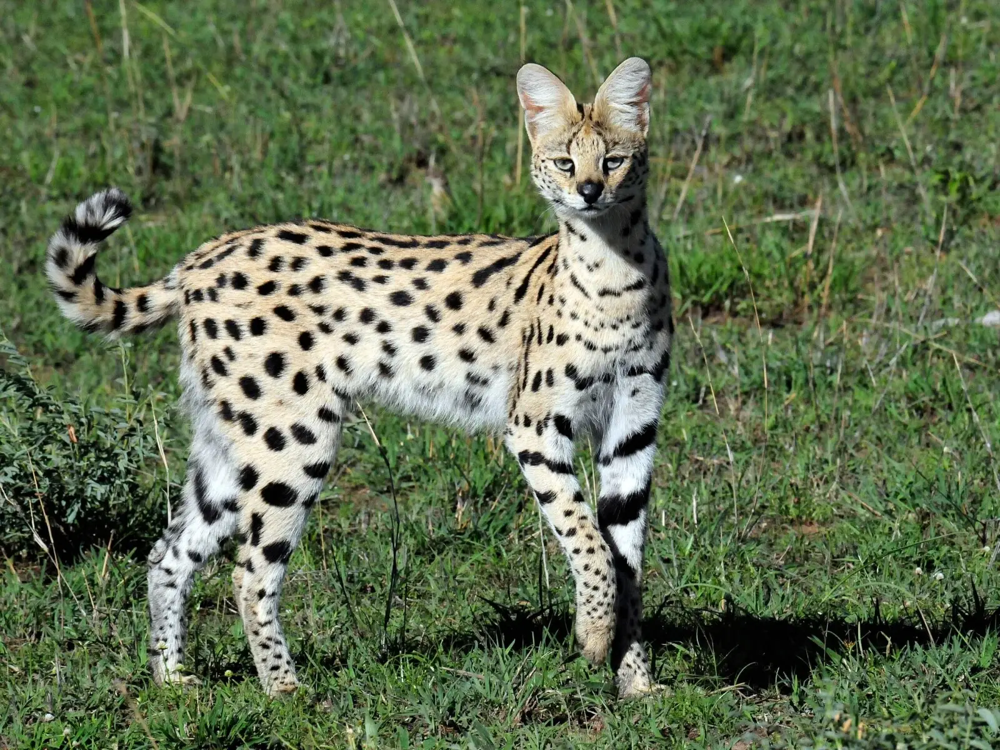
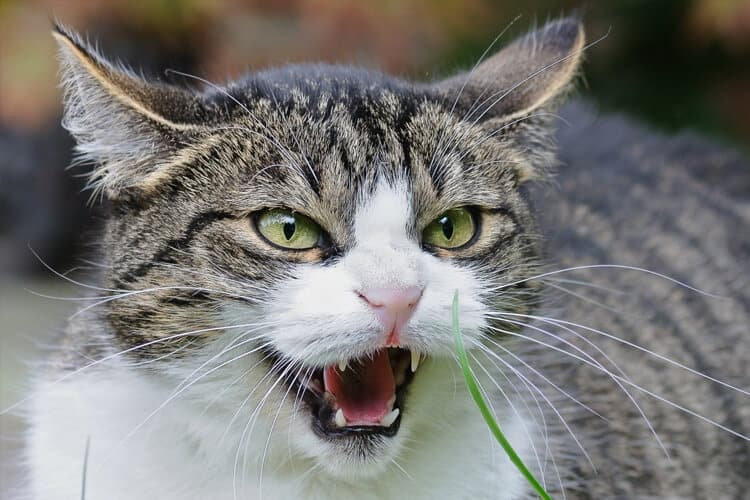

Tigre-de-Bengala (Panthera tigris tigris)
Descrição: O maior felino do mundo, conhecido por sua força e habilidade de caça.
Perigosidade: Responsável por numerosos ataques a humanos, especialmente em áreas rurais da Índia e Bangladesh.

Leão (Panthera leo)
Descrição: Conhecido como o "Rei da Selva", vive em grupos e é altamente territorial.
Perigosidade: Ataques a humanos são registrados, principalmente por leões mais velhos ou doentes.

Leopardo (Panthera pardus)
Descrição: Ágil e furtivo, com excelente camuflagem.
Perigosidade: Conhecido por ataques surpresa, inclusive a humanos, em algumas regiões da África e Ásia.

Onça-pintada (Panthera onca)
Descrição: Maior felino das Américas, com mandíbula extremamente poderosa.
Perigosidade: Embora ataques a humanos sejam raros, sua força e agressividade a tornam perigosa.

Tigre-siberiano (Panthera tigris altaica)
Descrição: Subespécie de tigre que habita a Sibéria, adaptado a climas frios.
Perigosidade: Ataques a humanos são raros, mas quando ocorrem, geralmente são fatais.

Puma (Puma concolor)
Descrição: Também conhecido como leão-da-montanha, é adaptável a diversos habitats.
Perigosidade: Ataques a humanos têm aumentado em áreas urbanizadas, especialmente na América do Norte.

Guepardo (Acinonyx jubatus)
Descrição: O animal terrestre mais rápido, especializado em caçadas de alta velocidade.
Perigosidade: Raramente ataca humanos, mas pode ser perigoso se acuado.

Caracal (Caracal caracal)
Descrição: Felino de médio porte com orelhas pontiagudas e habilidades de salto impressionantes.
Perigosidade: Pode ser agressivo, especialmente quando mantido em cativeiro.

Serval (Leptailurus serval)
Descrição: Felino africano de pernas longas, excelente caçador de pequenos animais.
Perigosidade: Embora não seja uma ameaça significativa para humanos, pode ser perigoso se provocado.

Gato-feral (Felis catus)
Descrição: Gatos domésticos que retornaram à vida selvagem.
Perigosidade: Podem transmitir doenças e impactar negativamente a fauna local.
